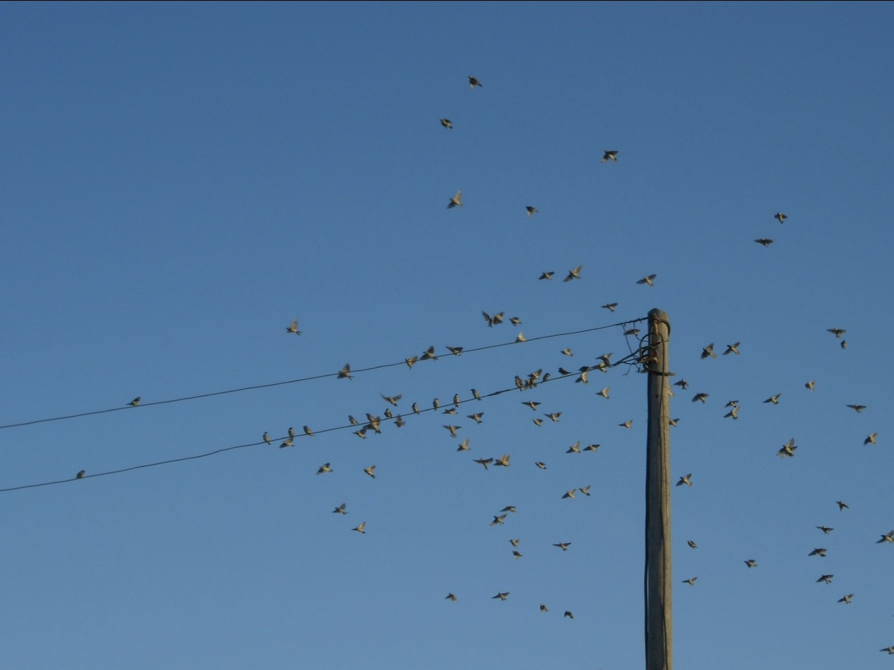
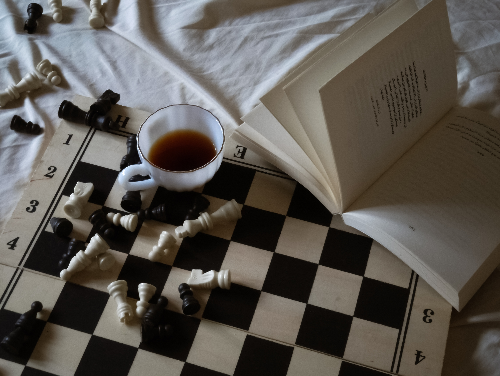
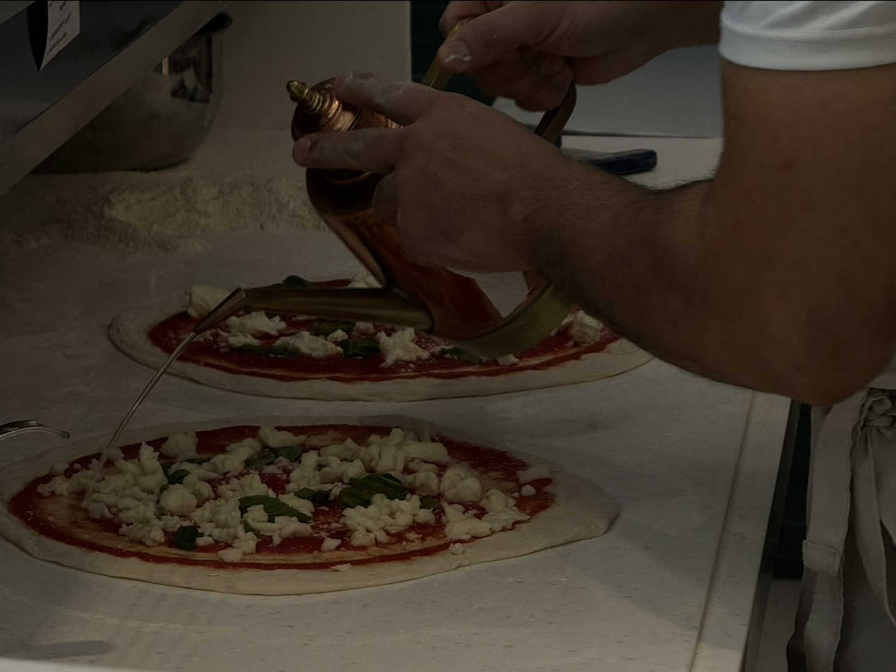

<!DOCTYPE html> 
<html lang="en"> </html>
<head>

   


    </style>
    <link rel="stylesheet" href="styles.css">
    <meta charset="UTF-8">
    <meta name="viewport"
          content="width=device-width, user-scalable=no, initial-scale=1.0, maximum-scale=1.0, minimum-scale=1.0">
    <meta http-equiv="X-UA-Compatible" content="ie=edge">
    <title>my hobbies</title>
    </head>
         <body>
            <header id="header2">
                  <nav>
                  <a href="index.html"> home</a>
                  <a href ="hobbies.html"> my hobbies</a>
                  <a href ="infos.html"> information</a>
                  </nav>
            </header>


           
            <h1 style ="padding-top: 10px; margin-left: 10px; font-size: 2.5em; color: #5b4870;"> my hobbies</h1>
            <p style=" padding-left: 25px;"> video editing</p>
            <p style=" padding-left: 25px;"> photography</p>
            <p style=" padding-left: 25px;"> language learning</p>

             
          <h1 id="hh"> video editing</h1>
          <p> i find joy in the proccess of hermonizing videos,text,and audio into a video that others would give the
            <br> time of day to watch </p>
          <video width="450" height="240" controls>
              <source src="vid.mp4" type="video/mp4">
              Your browser does not support the video tag.
              </video> 
               <h1 id="hh"> photography </h1>
            <p> showing the beauty of simple details through my own lens</p>

          <div class ="gallery">
            
            
            
            
          </div>

            <h1 id="hh"> language learning</h1>
            <p> the blessing of being bilingual since i was young, made me love languages and the culture surrounding them
                <br>, because there is no better way to understand a person than in their mother tongue.
            </p>
            <p> نعمة كوني ثنائية اللغة منذ الصغر خلقت في داخلي حب اللغات والثقافة التي تحيط بها، 
                <br> إذ لا وسيلة لفهم شخص ما أفضل من لغته الأم.</p>
            <p>从小就是双语者是一种恩赐,它唤醒了我对语 言及其文化的热爱。
                <br>因为,若想真正理解一个 人,最好的方式莫过于用他的母语交流。</p>
         <footer style=" margin-top: 20px;">
    <p id="footer-text" style="color: white;">  &copy; 2025 Nour Alakak </p>

            </footer>
            </body> 
            
            
            
            </html>